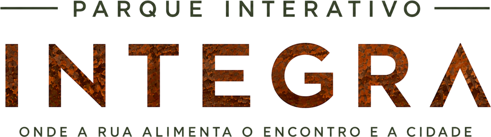
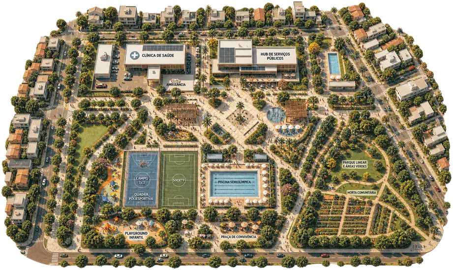

Gastronomia, Convivência e Vida ao Ar Livre← Volte ao Oceano
“O céu aberto da convivência e da vida.”
Onde morar, trabalhar, comer, brincar e descansar acontecem juntos. Segregar o uso adoece a cidade; integrar o lazer ao cotidiano transforma tempo livre em desenvolvimento.
A rua alimenta, o parque acolhe, a praça conecta. E todos vivem juntos.
Negócio âncoraFood Park + Parque Interativo Urbano
+30%
tempo de permanência na rua
−20%
deslocamento de carro
+15%
faturamento do comércio local